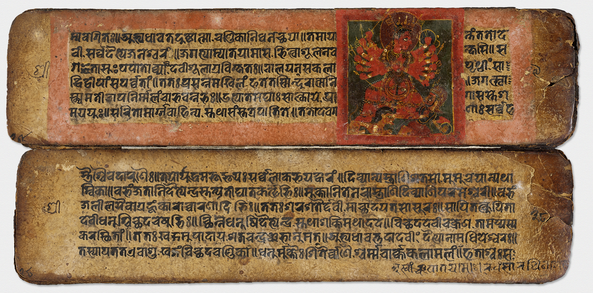

Ancient Writing
by Jake Kovacocy
Test, does this look good
Artifact 1
Sumerian Cuneiform Tablet

Between 3500 and 3000 BC, in Uruk, the cuneiform writing language was created.
This writing system spread across all Sumerian civilizations like wildfire due to its widespread, and necessary uses.
This cuneiform tablet was one of the earliest writing systems in the world.
This language enabled people in Mesopotamia to take records, write laws, and keep track of transactions.
They also used these to keep track of taxes, and items that were stored in the ziggurat, such as crops, money, other tablets, and weapons.
Cuneiform tablets were made of clay. They would be formed into a tablet, and then while wet, scribes would use reed styluses to inscribe messages into it.
The tablets would be sun-dried. Once dried, they would hold the message forever, or more often, until it cracked.
This invention helped organize the ancient river valley civilizations and helped modern-day scientists discover ancient laws, records, and the day-to-day life of Sumerians.
Artifact 2
Greek Wax Writing Tablet
In around 1600 BC, the Greek language Linear B was created.
This language was an adaptation of Linear A to make writing on vases, murals, and clay tablets easier.
Eventually, the Greeks needed a more reusable portable writing system.
In this need, they created the wax tablet.
These tablets would be made of a wood tray, and filled with beeswax.
Once dried, the user would use a bone, metal, or wood stylus to inscribe letters on the tablet.
The resulting inscriptions would resemble letters in the Linear B language and would have many angles and straight lines, as the wax tablet made straight lines easier to draw.
In fact, modern-day “Greek Style” fonts look angular and with many straight lines due to the difficulty of writing curved lines on Greek wax tablets.
On these tablets, one could expect to write notes from public speaking, speeches, and just general day-to-day writings.
Government officials would use these to organize tax collections and merchants could keep track of their orders, stock, and prices.
Artifact 3
Egyptian Heiroglyphics

Around 3100 BC a new writing system emerged.
In Egypt, there was a need for a written language and their new language, Hieroglyphics, was made.
These “letters” were representations of animals, body parts, and other common symbols in their time, making it a pictographic language.
Sentences would comprise pictures and illustrations that would represent a single sound.
These sounds would then be pronounced as one word.
Egyptians wrote hieroglyphs on papyrus or carved them into stone or plaster using copper chisels or mallets.
This language allowed Egyptians to take, write, or read records, solve calculations, and write documents of royal importance and it allowed them to decorate or inscribe messages on the tombs of powerful people, such as the Pharaoh.
Such inscriptions would display the name of the buried person, their parents’ names, prayers, and warnings to pray to or worship gods.
Today these hieroglyphics help us understand how an Egyptian’s daily life was, who they were religiously loyal to, and who the people buried in royal tombs were.
Artifact 4
Sanskrit Literature

between 1700-1200 BC, in Southern Asia, around the Indus River in modern-day India, a new written language, Sanskrit was created.
Sanskrit was used for religious literature, as shown above, religious inscriptions, record keeping, and inspired many modern languages in India to be based on it.
The language was also widely used to write, poetry, music, drama, and even scientific papers.
Hindus wrote with styluses, onto a paper made from leaves, making it effortless to write curves and more organic letters.
The language was very heavily influenced by religion and most texts comprised of Sanskrit.
This language was used to write the most important Hindu text, the Vedas.
The entirety of Rig Veda was written in Sanskrit, and the whole Hindu religion was based on these texts.
Therefore, discovering and interpreting this language gave scientists and linguists a very heavy, deep understanding of the ancient Hindu daily life, records, and religion.
Artifact 5
Chinese Oracle Bone

In Eastern Ancient China, there was no way to communicate with the gods or dead spirits.
With no communication, the people, and more importantly their ruler could not take advice from the gods.
To do so, around 1368-1644 BC, traditional Mandarin was created.
Not to be confused with simplified Mandarin, traditional Mandarin was pictographic and took many strokes to create simple, rough images of the things words meant.
Traditional Mandarin characters were not letters, in fact, each character was a word, making sentences relatively short.
Ancient Chinese either wrote ink, or carved characters into oracle bones, as shown above, or tortoise shells.
Once a message was written on the bones, a hot poker would touch the bone, cracking it.
The cracks would be interpreted as messages from powerful spirits and gods.
Many rulers would send messages to them and use the responses as legitimate advice.
These messages helped modern civilizations understand the religion and the beliefs of the ancient Chinese.